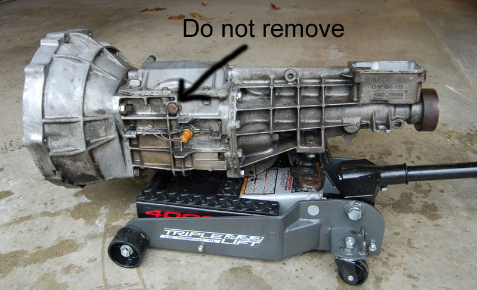

-
I've never seen anything on the strength of that trans though…G-E;328384 wrote: OR how about the even more available pathfinder/hardbody trans… that's a direct fitFeedback- viewtopic.php?f=18&t=19840

-
It's a 30A. It shouldn't differ wildly from any of the other 30A's. Especially since it's moving a heavier car. the Z31 parts for rebuilds are the same as the Pathy ones.floridaZ;328459 wrote: I've never seen anything on the strength of that trans though… -
The only significant difference is the first gear ratio is 2.6x instead of 1.8x… the housing casting is different in that they move the fill hole higher up for extra fluid capacity after realizing the z31 hole is too low heh -
To answer my own post about the interchangeability between a 30a and a 90a. For the last 100 miles it appears to be working with Z33 pressure plate and a 240mm flywheel.Life's short
Go fast
Have a blast
Leave a good looking corpse -
yeah, beck has been saying that for ages. ritter too. beck advised me to fill my transes up to the fill hole, then add another half-litre through the shift lever hole. The transmission that's in the car you came for a ride in was very rough until I started adding more fluid. it's something that really made a difference in that trans specifically. In the one before that it didn't really do much.G-E;328472 wrote: The only significant difference is the first gear ratio is 2.6x instead of 1.8x… the housing casting is different in that they move the fill hole higher up for extra fluid capacity after realizing the z31 hole is too low heh -
Nissan thought that too, hence the new casting… although they made reference to "heavy duty" … it's still the same transmission, if it's good for one, it's good for the other -
so you fill your 30a this way? I might have to try thisCareless;328569 wrote: yeah, beck has been saying that for ages. ritter too. beck advised me to fill my transes up to the fill hole, then add another half-litre through the shift lever hole. The transmission that's in the car you came for a ride in was very rough until I started adding more fluid. it's something that really made a difference in that trans specifically. In the one before that it didn't really do much.1985 300ZX Turbo- Wrecked R.I.P.
-Stock
04/87 300zx Turbo GLL- Project Car/Daily
-Built Heads, Cams, HX35....etc.
2007 Dodge Ram 1500 SLT Quad Cab w/Hemi- SOLD
-Banks Full 3in Exhaust, Edge Evolution Tuner Chip, K&N Cold Air Intake, BBK 90mm Throttle Body, Full JL Audio Sound System(speakers, amps, subs) Pioneer Touch Screen Head Unit
2014 Chevy Cruze Lt RS- Daily
-Stock 1.4T Autotragic

-
Hrm interesting. I just received some fresh oil for the rebuilt 30A that will be going in shortly.. I may have to try this..


-
I thought about making a spigot for the lower hole (drain) and some kind of filler neck, maybe a hose coupler with a ball valve for easier filling from the top -
Is this oil level issue fixed concerning the Z32 30A? Assuming it is if they fixed it on the Pathy1988 SS #71
Better to remain silent and be thought a fool, than to speak and remove all doubt. -
How do I know if I have a 30a or a 71c? my tranny is from a 86 turbo pretty sure is a borg warner T5. Looks like this one the front part can be removed, will the zspeed fork will fit this tranny?
 -
I used an el cheapo pump from advance auto.Cha iro
enjoy building it yourself.
if it fails, fuck it.
at least you gave it a whirl. -
Looks like I will need to do this. Thanks for the info.87 300zx turbo ~600whp
Built motor, ported heads, stage 2 cams, oversized valves, gutted maxima plenum, etc, etc, etc.....

Copyright © 2006–. All rights reserved. Privacy Policy